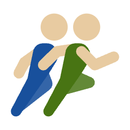
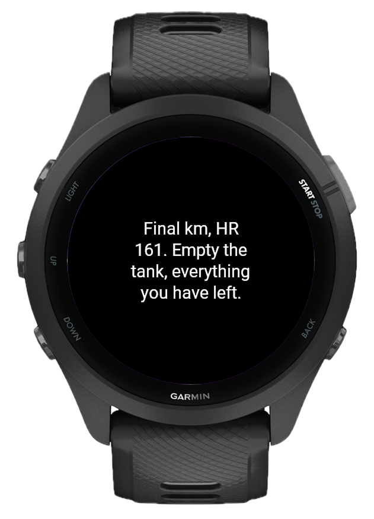
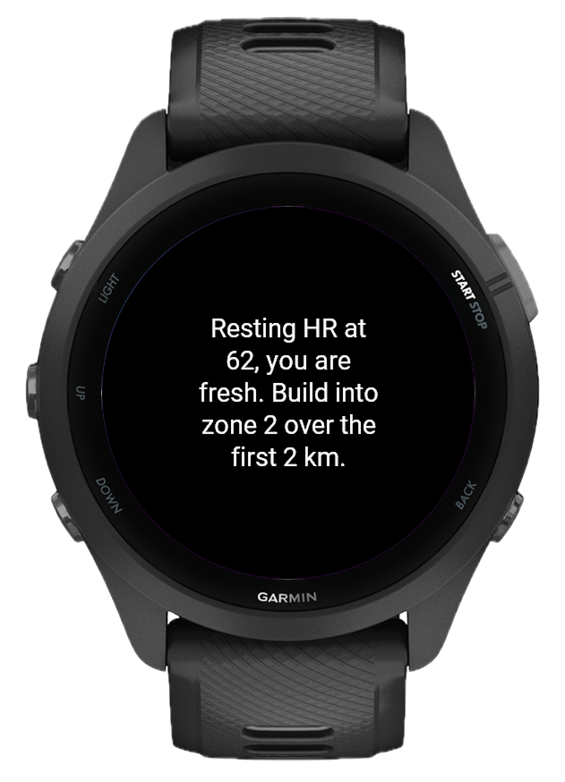
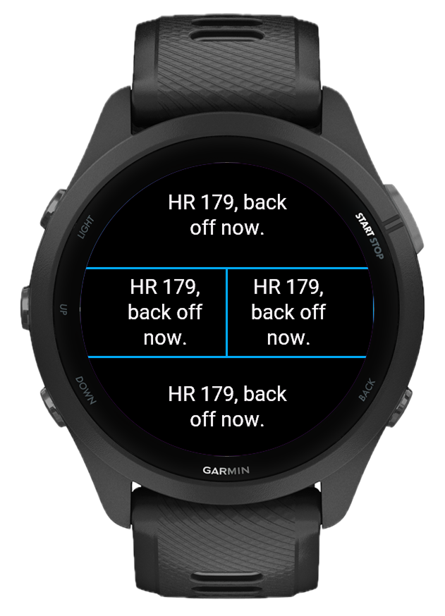
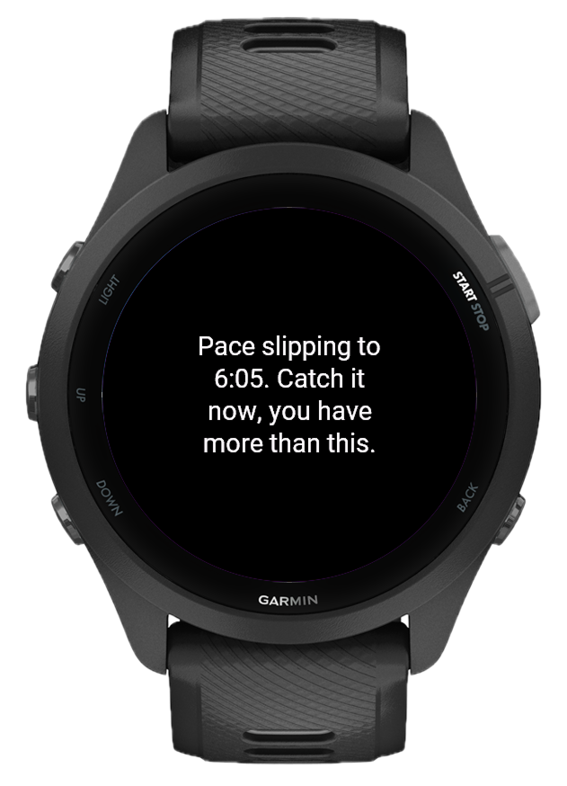
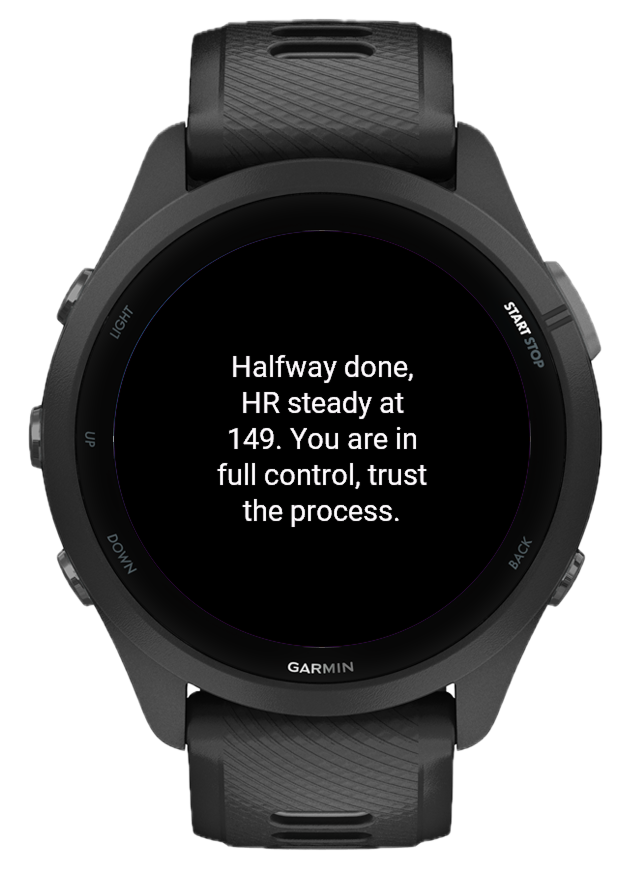
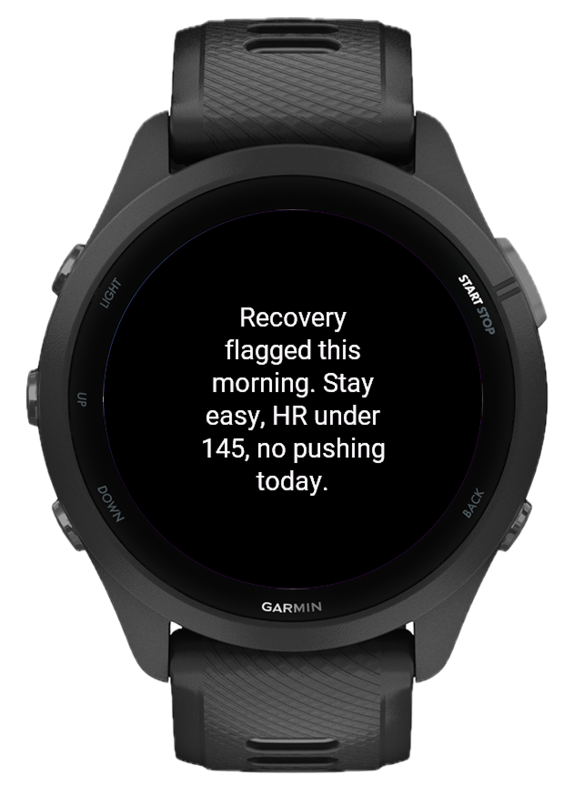
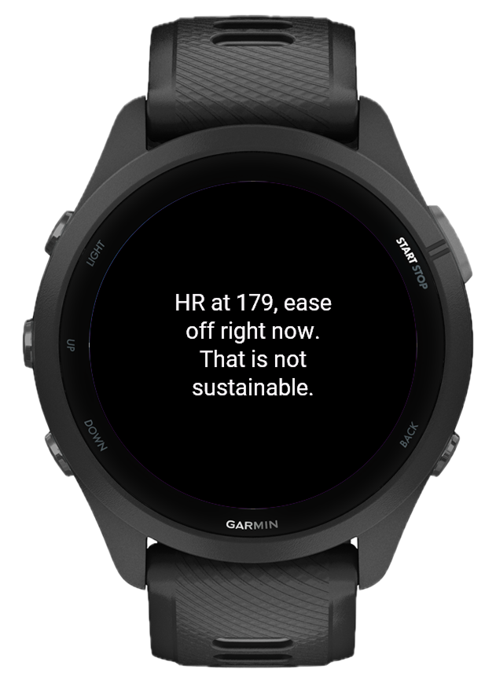

CoachPulseAI Coaching Data Field for Garmin

You lace up, start the activity, and run. Fifteen minutes in, your heart rate is creeping higher than it should. You push through anyway. You finish tired, a little overtrained, not quite sure if today helped or hurt. CoachPulse is the coach you wish had been watching.
Training alone is hard
A good coach notices when your form slips around kilometre four. They know when to push you and when to pull back, adjusting based on how you look today. Your Garmin is full of biometric data, but none of it talks back. CoachPulse connects that data to an AI and turns it into live coaching cues right on your watch screen while you are still moving.

How it works
CoachPulse runs as a data field inside any Garmin activity. When something notable happens, it packages your current metrics and sends a prompt to the AI model of your choice. The cue comes back and appears on screen. No app switch, no phone unlock. You bring your own API key from OpenAI, Anthropic Claude, or Google Gemini.

What triggers a coaching cue
CoachPulse fires at meaningful moments: workout start (readiness check), kilometre and time milestones, sustained high effort (zone 3+ for too long), and pace drops below your session average. A periodic check-in interval is also available. Every trigger can be turned on or off individually.

Your session, your goal
Set a short session goal before you head out: "easy recovery run", "tempo intervals, stay in zone 3", "long slow distance". That goal travels with every prompt CoachPulse sends. A cue during a recovery run sounds different from one during a race-pace effort, even if the biometrics look similar.

Coach it the way you want to be coached
Choose a Coaching Style from Relaxed to Aggressive. Control how much the AI weighs fatigue signals with Recovery Focus. Set Response Length to Short, Normal, or Long as your baseline preference. The word count also adapts automatically to the actual size of the data field slot, so responses fit cleanly whether you're on a full-screen layout or a compact split.

Smart enough to leave you alone
After a cue fires, CoachPulse enters a cooldown. No new cues until the timer expires. The default is 5 minutes. A coach who speaks every 30 seconds stops being a coach and starts being a distraction. The last cue stays on screen until replaced, so you never miss it mid-stride.

Using CoachPulse on your watch
CoachPulse is a data field, not a standalone app. You add it to a data screen inside an existing activity profile.
Setup steps
What the screen shows: idle shows "Monitoring..." in white, fetching shows "Preparing..." in grey, a cue appears centred in white, errors in orange. If the API key is missing a yellow prompt reminds you to set it.
All settings, explained
All settings are configured through the Garmin Connect IQ app on your phone. Changes take effect the next time you start an activity.
Supported watches
CoachPulse works on Garmin devices that support Connect IQ data fields with the Communications permission, covering most Fenix, Forerunner, Epix, Venu, Marq, and Instinct models from the last several years. A phone with Garmin Connect is required to relay AI requests during a workout.
What's new
- Real-time AI coaching data field for Garmin watches
- Support for OpenAI, Anthropic Claude, and Google Gemini via a single unified API key setting
- 9 model options across all three providers (GPT-5.5 Pro, GPT-5.4 mini, GPT-5.4 nano, Claude Opus 4.7, Claude Sonnet 4.6, Claude Haiku 4.6, Gemini 2.5 Pro, Gemini 2.5 Flash, Gemini 2.5 Flash Lite)
- Session goal field: describe your workout intent and the AI coaches toward it
- Coaching style selector: 5 levels from Relaxed to Aggressive
- Recovery focus selector: 5 levels from Ignore to Maximum
- Response length selector: Short (5 to 6 words), Normal (5 to 9 words), Long (12 to 25 words)
- Configurable trigger system: workout start cue, kilometre and time milestone cues, sustained effort check-in, pace drop alert
- Periodic check-in interval: optional fixed-interval cues every N minutes
- Effort threshold setting: configurable minutes in zone 3+ before effort check-in fires
- Cooldown between cues: 15 to 600 seconds, default 300 seconds
- Text wraps automatically and fills the full available field width; fixed one-word-per-line issue that occurred in narrow or bezel-padded layouts
- Response word count adapts to the actual data field dimensions. The same setting displays cleanly across full-screen layouts and small split slots
- API key validation prompt shown on screen if key is missing
- Support for 80+ Garmin devices including Fenix 7/8, Forerunner 265/965/970, Epix 2, Venu 3, Instinct 3, and more
- Sport-specific HR zones: running, cycling, and swimming activities use their respective calibrated zones instead of the generic profile
- Unit system detection: pace and speed adapt to the device's km or miles preference automatically
- Extended distance milestones at 50km and 100km for ultra events; extended time milestones at 3h and 4h for long efforts
- HR Alerts toggle: zone breach and HR spike cues can now be turned on or off independently alongside other trigger settings
- Provider and model mismatch detected before any API call and surfaced as a clear on-screen message
- Session memory: AI tracks its own cues across the entire activity; OpenAI uses server-side conversation threading, Claude and Gemini receive the last several cues in the system prompt to avoid repetition and build context over time
- Session memory toggle: choose stateful (session memory on) or stateless (each cue is independent) per workout
- History Size setting: configure how many past responses Claude and Gemini receive as context, from 3 to 20, default 10